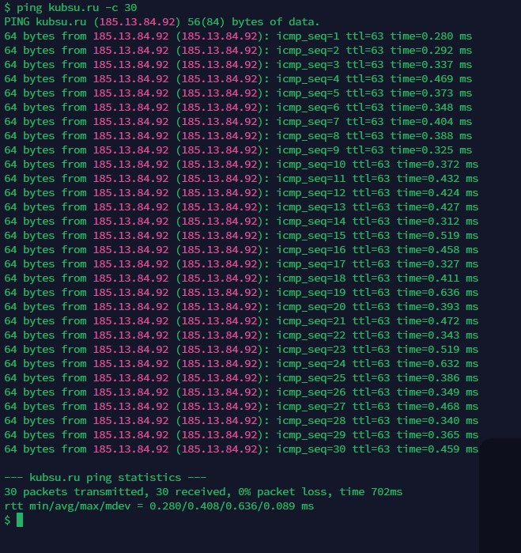
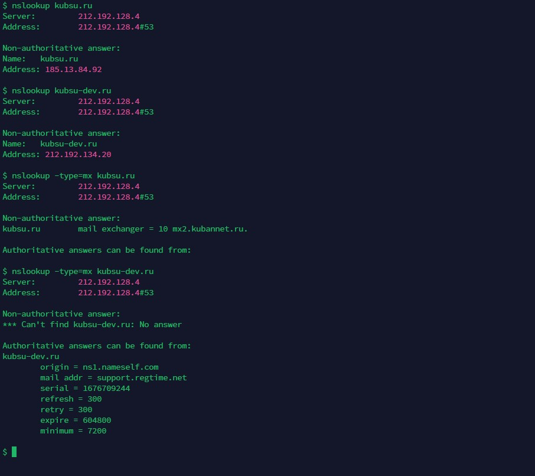
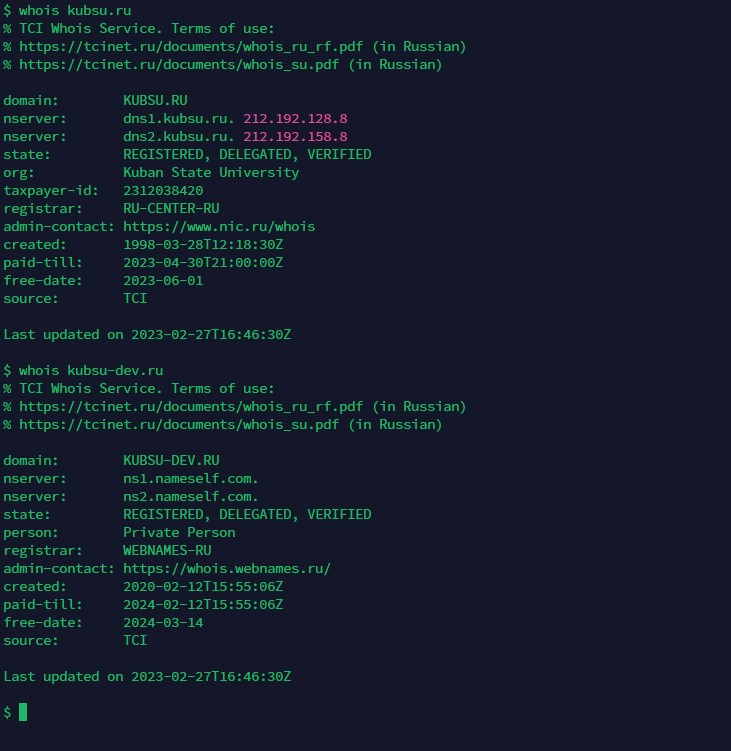

Задание 1
С помощью команды ping на учебном сервере узхнали IP-адрес веб-сервера kubsu.ru
С помощью команды nslookup узнали мх-записи и а-записи доменов kubsu.ru и kubsu-dev.ru
С помощью команды whois узнали дату регистрации домена kubsu.ru и kubsu-dev.ru

С помощью программы FileZilla соединились с учебным сервером и скопировали файлы на локальный компьютер